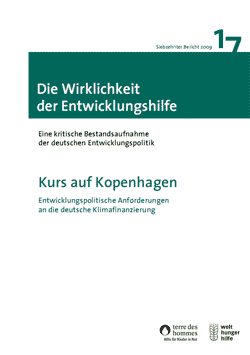

|
Mittwoch, 18. November 2009 |
Social Watch Deutschland Report 2009 vorgelegt:
Nichtregierungsorganisationen fordern angesichts globaler Krisen eine radikale Umkehr
|
"Wir haben es heute nicht nur mit einer globalen Finanz- und Wirtschaftskrise, sondern mit sich bedingender Klimakrise, Wasserkrise, Hungerkrise, Biodiversitätskrise und Energiekrise im Süden zu tun", meint Dr. Klaus Schilder von terre des hommes aus Anlass der Vorstellung des Social Watch Deutschland Report 2009. Der zivilgesellschaftliche Bericht mit dem Titel "Global Krisen - soziale Folgen und politische Konsequenzen" zeige, dass angesichts der Globalität der Krisen auch globale Antworten erforderlich seien: "Der Social Watch Bericht macht deutlich: Wir stehen vor historischen globalen Herausforderungen, angesichts derer die soziale und ökologische Zukunftsfähigkeit zur Gesellschaftspolitik werden muss. Eine grundlegende Neuordnung der globalen Wirtschafts- und Finanzarchitektur ist vordringlich. Die von der Stiglitz-Kommission formulierten Reformvorschläge müssen unter Führung der Vereinten Nationen - nicht der G20 - umgesetzt werden, die demokratische Teilhabe von Entwicklungsländern an globalen Entscheidungsprozessen muss rasch gestärkt werden", so Schilder.
Von den Krisen sind die Entwicklungsländer besonders betroffen. Dort hat allein die Zahl der Hungernden um 100 Millionen zugenommen. Dort auch werden die Folgen der Klimakrise am schlimmsten sein. Aber auch in den Industrie- und Schwellenländern sind die Folgen der Krisen allgegenwärtig. Darauf verweist Roberto Bissio aus Montevideo, Direktor des internationalen Social Watch Netzwerkes. "Aufgrund der Krise sind die Millenniums-Entwicklungsziele in weite Ferne gerückt. Der Social Watch Bericht zeigt: In vielen Ländern verschärft sich die Nahrungsmittelknappheit, die Zahl der Hungernden nimmt zu. Überall nimmt die soziale Polarisierung, die Kluft zwischen Arm und Reich, zu. In fast allen Ländern sind Kinder und Frauen unverhältnismäßig stark von der Krise betroffen", so Bissio. "Hierbei zeigt sich, dass die Märkte nicht in der Lage sind, die von ihnen selbst verursachten Probleme zu lösen", betont Bissio.
In der Tat ist eine radikale Umkehr nötig. "Zukunftsfähigkeit reicht weit über Hybridwagen oder Energiesparlampen hinaus. Auf der Tagesordnung steht der Umbau der gesamten Konsum- und Wegwerfgesellschaft", meint Klaus Heidel von der Werkstatt Ökonomie, der zugleich Sprecher von Social Watch Deutschland/Forum Weltsozialgipfel ist. "Angesichts begrenzter Ressourcen, großer sozialer Ungleichheit auch in den reichen Ländern und einer Übernutzung der natürlichen Ressourcen durch die Menschen in Industrieländern, ist dabei mit erheblichen Konflikten zu rechnen. Dass konsensuale Problemlösungsstrategien an Runden Tischen zum Erfolg führen, ist unwahrscheinlich. Daher muss der Umbau mit demokratischen Mitteln, durch Protest, Überzeugung und Pioniertätigkeit vorangetrieben werden. Nur dann kann der ökologische und soziale Kollaps verhindert werden", so Heidel.
Social Watch Deutschland/Forum Weltsozialgipfel ist ein Forum von 28 entwicklungs- und sozialpolitischen Organisationen, kirchlichen Institutionen, politischen Stiftungen und Gewerkschaften. Es wurde im Vorfeld des Weltgipfels für soziale Entwicklung (Kopenhagen 1995) gegründet. Sein Ziel ist die kritische Beobachtung der Umsetzung von sozial- und entwicklungspolitischen Beschlüssen großer Weltkonferenzen. |
Donnerstag, 05. November 2009 |
17. Bericht zur Wirklichkeit der Entwicklungshilfe
Welthungerhilfe und terre des hommes fordern verlässliche Finanzierung von Klimaschutz im Süden
|
Die Hilfswerke terre des hommes und Welthungerhilfe fordern in ihrem Bericht von der neuen Bundesregierung ein klares Bekenntnis, die Finanzierung des Klimawandels verbindlich sicherzustellen und als eigenständige Aufgabe in der Entwicklungspolitik zu verankern. "In der mittelfristigen Finanzplanung der Bundesregierung bis 2013 muss jährlich ein Prozent des Bruttonationaleinkommens für Entwicklungshilfe vorgesehen werden, um damit auch den Herausforderungen des Klimaschutzes zu begegnen. Im Koalitionsvertrag gibt es zu Zeitzielen keine verbindlichen Aussagen. Es wäre deshalb ein starkes Signal der Regierung, wenn sie sich noch vor dem Klimagipfel in Kopenhagen dazu bekennen würde", sagte Danuta Sacher, Geschäftsführerin von terre des hommes.
Die beiden Hilfswerke kritisieren, dass ausgerechnet die Menschen am stärksten vom Klimawandel betroffen sein werden, die ihn nicht verursacht haben, sich gegen seine Folgen aber am wenigsten wehren können. "Die armen Länder haben 90 Prozent der menschlichen Opfer und der wirtschaftlichen Folgekosten des Klimawandels zu tragen. Das sind Kleinbauern und Bäuerinnen auf dem Land, die unsere enormen Klimaschulden bezahlen müssen", warnte Dr. Wolfgang Jamann, Generalsekretär der Welthungerhilfe.
Die Finanzierung von Klimaschutzprogrammen ist eine Frage der Prioritäten. Etwa 100 Milliarden Dollar pro Jahr sind nötig, um den Klimaschutz und Anpassungsprogramme im Süden zu finanzieren. Die westlichen Industrienationen gaben 2008 allein 265 Milliarden Dollar für Agrarsubventionen aus. Rund 300 Milliarden Dollar fließen weltweit in die Subventionierung fossiler Brennstoffe.
Welthungerhilfe und terre des hommes fordern außerdem die wachsende Unübersichtlichkeit der internationalen Klimafonds zu beseitigen und eine zentrale Entscheidungsinstanz zu benennen, um Doppelarbeit und Koordinierungsbedarf zu reduzieren.
Der Bericht "Die Wirklichkeit der Entwicklungshilfe" ist als Schattenbericht zu den offiziellen Zahlen des Entwicklungsausschusses (Development Assistance Committee/DAC) der Organisation für wirtschaftliche Zusammenarbeit und Entwicklung (OECD) konzipiert. Er untersucht Quantität und Qualität der deutschen und internationalen Entwicklungshilfe.
Weitere Informationen und 17. Bericht zum Download |
Montag, 02. November 2009 |
Deutschland: Beschämender Umgang mit Ex-Kindersoldaten
Neue Studie "Kindersoldaten als Flüchtlinge in Deutschland"
|
Ehemalige Kindersoldaten sind im deutschen Asylverfahren benachteiligt. Das deutsche Asylrecht geht nur unzureichend auf die besonderen Erfordernisse dieser Flüchtlingsgruppe ein. Zu diesem Ergebnis kommt die Studie "Zwischen Angst und Hoffnung - Kindersoldaten als Flüchtlinge in Deutschland", die vom Kinderhilfswerk terre des hommes und dem Bundesfachverband Unbegleitete Minderjährige Flüchtlinge (B-UMF) vorgestellt wurde.
In der Studie wird die Situation ehemaliger Kindersoldaten analysiert, die als Flüchtlinge nach Deutschland gekommen sind. Dabei wird deutlich, dass weder im Asyl- noch im Aufnahmeverfahren die besondere Situation dieser Flüchtlingsgruppe berücksichtigt wird. Nur in wenigen Fällen erfolgt eine altersgerechte Unterbringung oder eine Betreuung. "Die Aufnahme der jungen Flüchtlinge muss sich am Kindeswohl orientieren. Sie suchen Schutz und dieser wird ihnen in Deutschland vielfach nicht ausreichend gewährt", meint Thomas Berthold vom B-UMF.
So wird auch bei den Anhörungen im Asylverfahren keine Rücksicht auf traumatische Erfahrungen genommen. "Hier besteht dringender Handlungsbedarf. Der neue Koalitionsvertrag sieht zwar ein internationales Engagement Deutschlands gegen den Einsatz von Kindern als Soldaten vor. Er beinhaltet jedoch keine Maßnahmen zu einer kindgerechten Ausgestaltung des hiesigen Asylverfahrens", so Andreas Meißner, terre des hommes-Referent für Kinderrechte. "Es ist ein positives Signal, dass der ausländerrechtliche Vorbehalt zur Kinderrechtskonvention endlich aufgehoben werden soll. Dies muss jedoch auch entsprechende Änderungen im Asylrecht mit sich bringen." Thomas Berthold vom B-UMF ergänzt: "Kinderspezifische Fluchtgründe, wie sie bei ehemaligen Kindersoldaten vorliegen, müssen endlich anerkannt werden."
Die Studie "Zwischen Angst und Hoffnung - Kindersoldaten als Flüchtlinge in Deutschland" ist gedruckt oder als Download zu beziehen. |
Montag, 02. November 2009 |
Koalitionsentscheidung zur Eigenständigkeit des Entwicklungshilfeministeriums:
Entwicklungspolitik auf die Ärmsten konzentrieren!
|
Der Entscheidung der zukünftigen Bundesregierung, ein eigenständiges Entwicklungshilfeministerium beizubehalten, begrüßen wir als klares Bekenntnis zu globaler Verantwortung. Es muss nun ein deutliches Signal zur Stärkung seiner Kompetenzen im Kabinett folgen. Denn die dramatischen Auswirkungen von Finanz- und Klimakrise gerade in Entwicklungsländern erfordern eine kohärente Politik der Armutsbekämpfung. Das Entwicklungshilfeministerium muss die Federführung für die Südpolitik der Bundesregierung behalten und sicherstellen, dass nicht außenwirtschaftliche Exportinteressen oder die Suche nach Absatzmärkten für subventionierte Agrarprodukte die Erfolge von Hilfsmaßnahmen zunichte machen. Dies erklärte Danuta Sacher, Geschäftsführerin von terre des hommes.
"Die Entwicklungspolitik muss durchstarten und dazu beitragen, dass die Zahl der Armen schnell wieder sinkt. Es ist unerträglich, dass nach wie vor täglich 25.000 Kinder unter fünf Jahren an den Folgen leicht zu behandelnder Krankheiten sterben", so Danuta Sacher. Dafür sei politischer Wille erforderlich. "Anders als die FDP bisher vertritt, dürfen wir in der Entwicklungspolitik nicht auf das freie Spiel der Marktkräfte setzen, denn der Markt schützt nicht die Interessen der Ärmsten, sondern derjenigen, die sich am besten behaupten können. Dies sind gerade nicht die Armen, Frauen, Kinder, Landlosen oder Minderheiten. Marktradikale Konzepte sind erwiesenermaßen ungeeignet, Lösungen für die drängendsten Probleme wie Klimakrise, Ernährung, Bildung und Gesundheit, Demokratie und Menschenrechte zu finden."
terre des hommes erwartet gemeinsam mit den anderen Entwicklungsorganisationen eine Fortsetzung des konstruktiven Dialogs zwischen dem BMZ und der nicht-staatlichen Fachorganisationen. |
|
|
|
 Ansprechpartner Ansprechpartner
|
|
Wolfgang Deppisch
(Projektinfos)
Tel. 07222 / 32927
Heinz Wolf
(Sponsoring, Allgemeines)
Tel. 07225 / 75543
weitere Ansprechpartner
|
|
Erlöse
1992-2012
|
|

Jahr |
Euro |
1992 |
70.000 |
1993 |
75.600 |
1994 |
83.883 |
1995 |
69.617 |
1996 |
51.412 |
1997 |
61.749 |
1998 |
60.333 |
1999 |
68.742 |
2000 |
85.492 |
2001 |
106.375 |
2002 |
78.937 |
2003 |
84.027 |
2004 |
76.662 |
2005 |
149.941 |
2006 |
84.497 |
2007 |
105.958 |
2008 |
104.053 |
2009 |
100.833 |
2010 |
107.254 |
2011 |
103.600 |
| 2012 |
158.250 |
| 2013 |
163.420 |
1977-2013 |
mehr als 2,7 Mio. € |
|
Detailansicht der Erlöszahlen |
|
|


;)